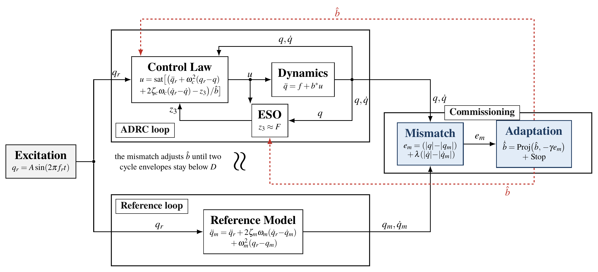
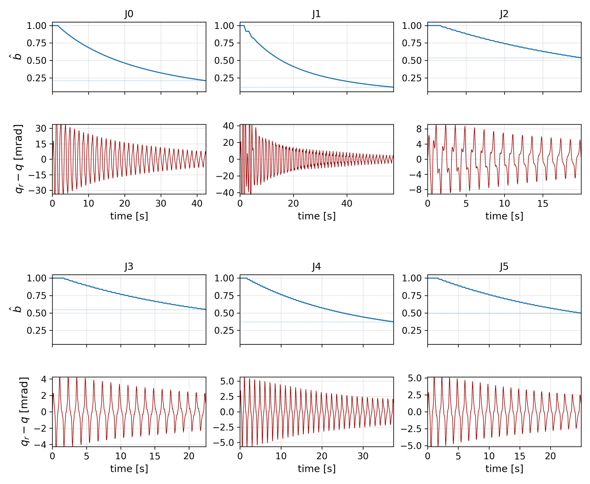
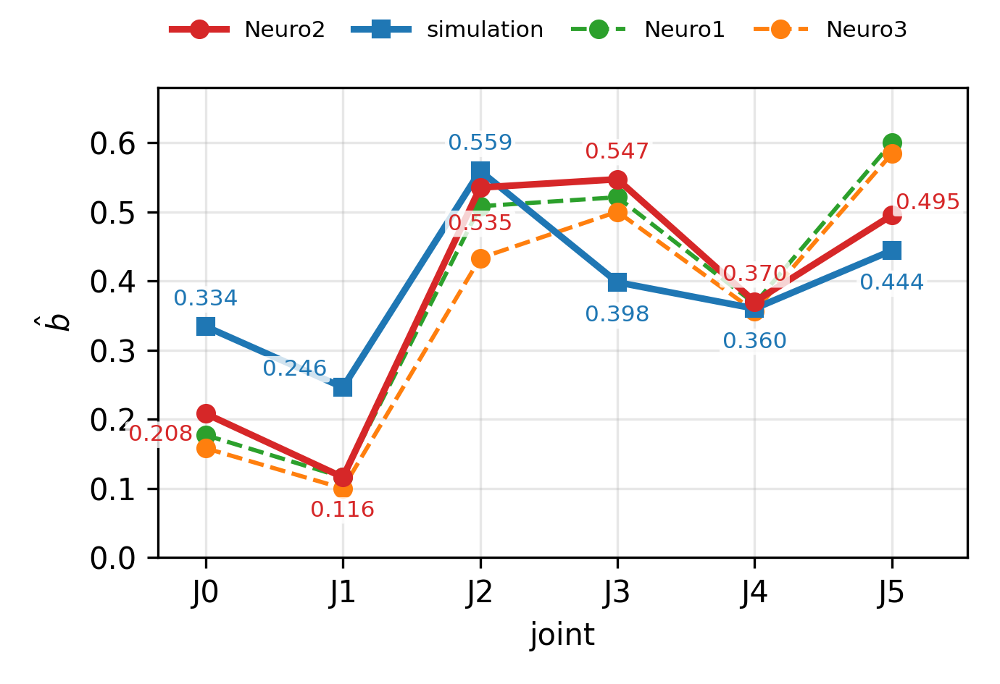
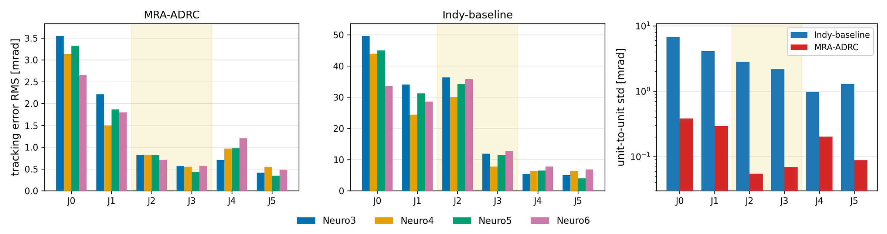
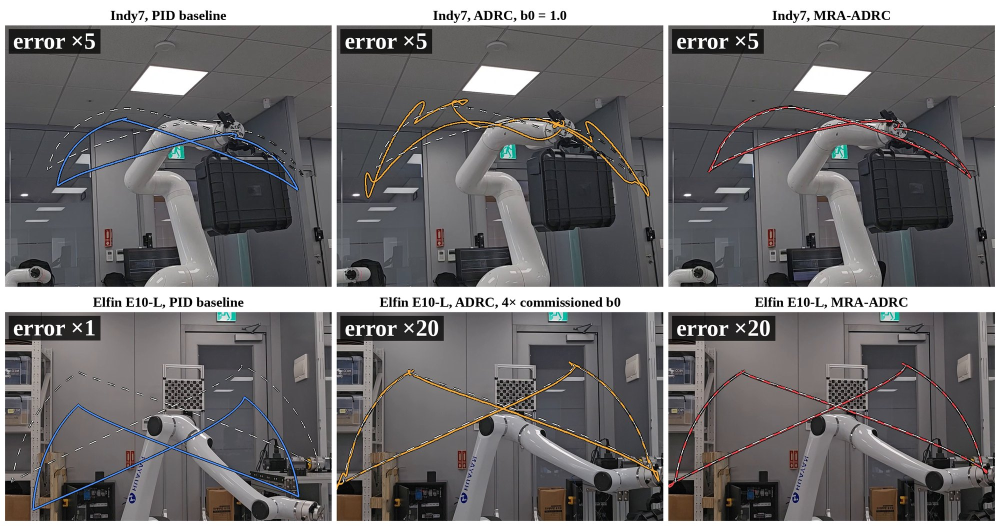
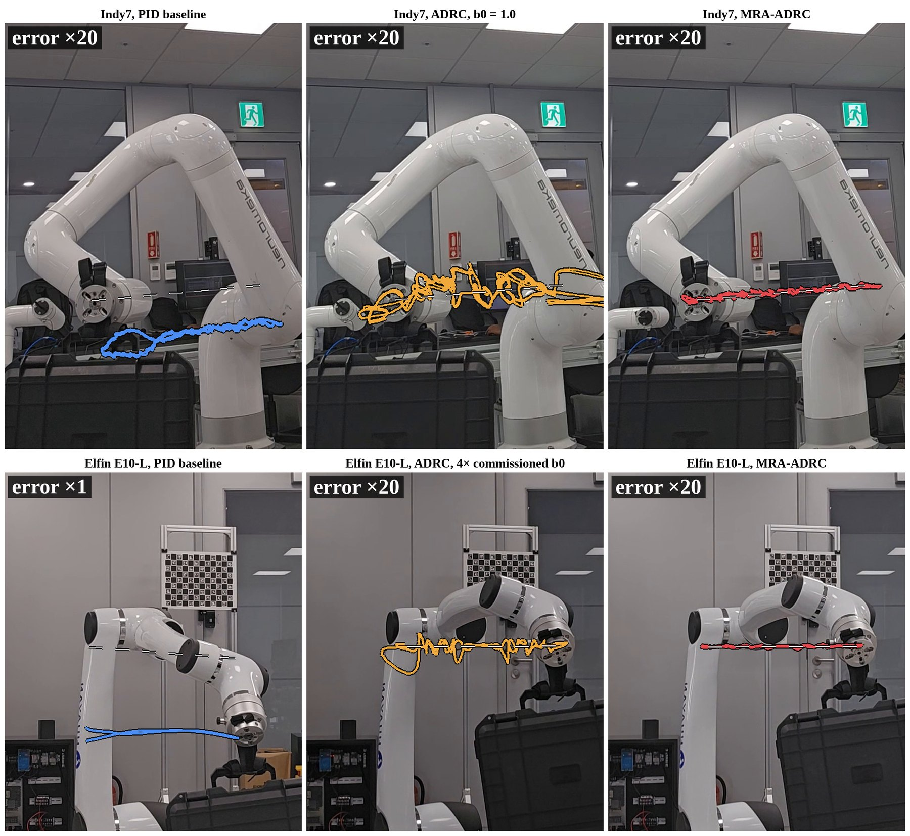
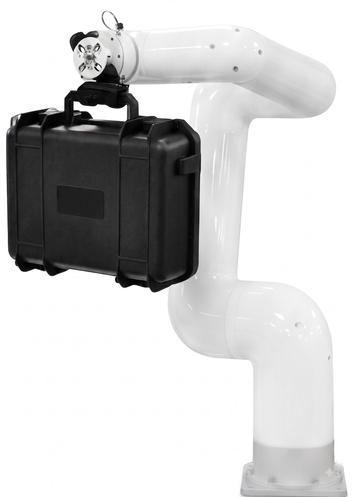
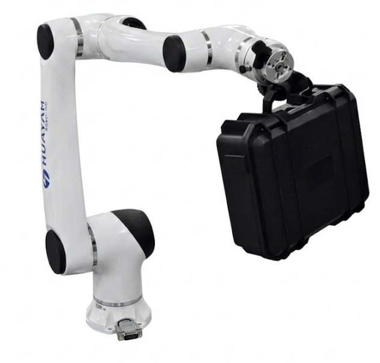

Forty-second overview, no audio: the idea, on-machine commissioning of the gain on the Indy7, one profile reused on four other units, and payload tracking on the Indy7 and the Elfin E10-L.
Active disturbance rejection control (ADRC) reduces dependence on a dynamic model, but its control-input gain still requires commissioning. This paper proposes model-reference adaptive ADRC (MRA-ADRC), integrating a response-based scalar update and cycle-envelope stopping rule into a 1 kHz robot torque loop. The update uses measured position–velocity mismatch without a model-derived regressor or joint torque measurements. Fixed-gain probes around a working prior set the adaptation rate and stopping threshold; two qualifying cycles freeze the gain for subsequent operation. Conditional tracking boundedness, local averaged-gain convergence, and a stopping-error bound explain the roles of gain sensitivity and residual bias.
Experiments establish three capabilities within the tested conditions. First, commissioning stopped on all six joints of both a Neuromeka Indy7 and a Huayan Robotics Elfin E10-L without observed torque saturation. Second, one Indy7 profile was reused unchanged on four other units with a payload absent during commissioning, reducing aggregate tracking error approximately sixteenfold relative to the deployed production controller. Third, holding the ADRC loop fixed while replacing overestimated gains reduced square-trajectory error approximately sevenfold and twofold on the two platforms at comparable command torque RMS.
The extended state observer of ADRC estimates and cancels the lumped disturbance, so the loop needs little model knowledge, yet one number is still left to the designer: the control-input gain b0, which scales the control effort and is usually tuned joint by joint on the machine. MRA-ADRC addresses this with two elements: a reference-model mismatch, measured from motion alone, that drives a projected scalar update of the gain, and a cycle-envelope stopping rule that freezes the gain for subsequent operation.

During bounded sinusoidal calibration, position and velocity are compared with a reference model through an absolute-value mismatch. A projected scalar update adjusts the control-input gain. The negative update direction is motivated by a locally increasing gated cycle-mean mismatch, assessed with fixed-gain probes. Instantaneous mismatch is also affected by phase differences and residual disturbances; it does not identify the sign of the physical gain error. No model-derived regressor or joint torque measurements are required. The commissioned gain is a control setting, not necessarily the physical inverse inertia.
Fixed-gain probes around a working prior set the stopping threshold to the smallest measured probe envelope. This is a finite-probe estimate, not an identified global minimum. Adaptation freezes after two qualifying excitation cycles. The four probes require 80 s per joint; the reported adaptation durations exclude probing and positioning. All six joints stopped in 20–57 s on Indy7 and 26–70 s on Elfin under the tested conditions.
These results do not prove global convergence, exact physical-gain identification, or termination from arbitrary initial gains.
The main contributions of the paper can be summarized as follows.
Unloaded commissioning reached the cycle-envelope stopping criterion on all six joints of both robot models. One Indy7 gain profile was reused unchanged on four other units under a 4.5 kg payload, reducing aggregate tracking error approximately sixteenfold relative to the deployed production controller. Holding the ADRC loop fixed and replacing overestimated gains reduced square-trajectory error approximately sevenfold on Indy7 and twofold on Elfin, at comparable command torque RMS. On the Cartesian line, forward-kinematics tool RMS error decreased from 2.06 to 0.45 mm on Indy7 and from 0.59 to 0.18 mm on Elfin.
Each joint of the Indy7 is commissioned in a single run from the coarse initial estimate binit = 1.0. The estimate descends and freezes at the automatic stop, and the six frozen values share their shape with a URDF-matched simulation, low at the base, high at the wrist, with a dip at J4.


The commissioned profile was deployed unchanged on four other Indy7 units, each carrying a 4.5 kg payload absent during commissioning. Aggregate tracking error was approximately sixteenfold lower than with the deployed production controller, while aggregate command torque RMS differed by only a few percent. The controllers retained their respective settings; their feedback gains and bandwidths were not matched. These results support profile reuse within the tested units and tasks.

The comparisons above mix the commissioned gain with the observer. This evaluation holds the ADRC loop fixed and swaps only b0, with a joint PID loop as a reference, under the 4.5 kg payload on both arms. Joint entries are quadratic means over the six joints, the tool error is the forward-kinematics error of the joint positions on the Cartesian line, and torque is the command torque RMS on the square.
| Arm | Controller | Square mrad | Line mrad | Tool RMS mm | Tool max mm | Torque N·m |
|---|---|---|---|---|---|---|
| Indy7 | PID baseline | 6.61 | 3.71 | 4.44 | 6.20 | 42.9 |
| ADRC, b0 = 1.0 (overestimated) | 10.69 | 1.63 | 2.06 | 7.59 | 44.5 | |
| MRA-ADRC | 1.54 | 0.42 | 0.45 | 2.55 | 42.7 | |
| Elfin E10-L | PID baseline | 41.28 | 53.92 | 128.06 | 168.77 | 50.2 |
| ADRC, 4× commissioned b0 | 0.88 | 0.57 | 0.59 | 2.95 | 49.3 | |
| MRA-ADRC | 0.43 | 0.22 | 0.18 | 0.87 | 49.5 |
In the clips below the three controllers run the same task under the same payload. Left to right in each clip: the PID baseline, the same ADRC loop with the overestimated gain, and MRA-ADRC. The dot marks the tool, its error from the commanded path is drawn magnified as labeled, and the lower strip traces the commanded (dashed) and actual tool path. All clips play at 2.4× speed.


Both arms run in joint torque mode at 1 kHz. Commissioning is performed unloaded. The subsequent tracking evaluations include tests with the same 4.5 kg tool payload. The complete probe-and-stop commissioning procedure was run on each robot model, and gain-replacement tests used the same ADRC structure within each platform.

